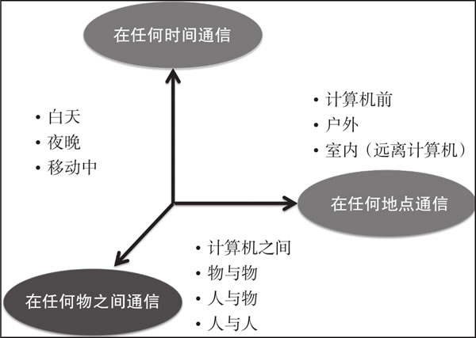
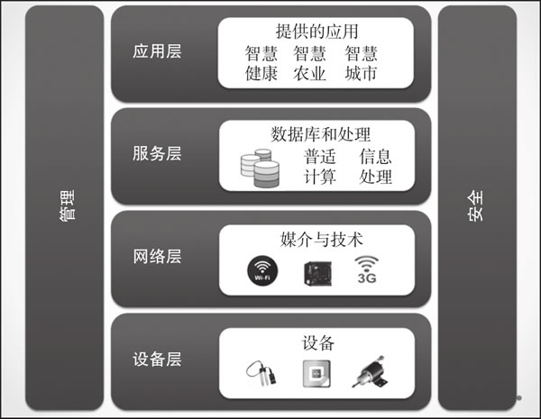
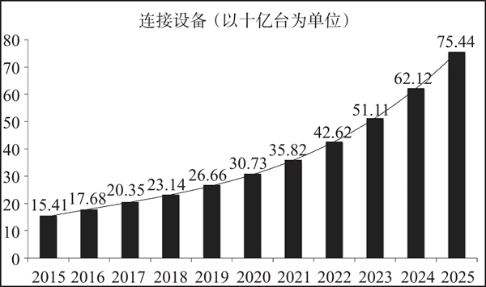

首页 > 编程笔记
什么是物联网
物联网一词最早是由英国工程师凯文·阿什顿（Kevin Ashton）于 1999 年提出的，在当时，供给计算机的大部分数据都是人为产生的；他指出，最好的方式应该是由计算机直接获取数据，而无须人工干预。于是，他提出由诸如射频识别技术（Radio Frequency Identification，RFID）和其他各种类型的传感器来采集数据，然后通过网络直接传送至计算机。
今天的物联网，也称为万物互联网，有时称为雾联网，是指由可以连接到互联网的传感器、执行器、智能手机等广泛的物理对象构成的物物相连的网络。
物联网中的“物”可以是任何东西，既可以是佩戴可穿戴设备（甚至是手机）的人、带有 RFID 标签的动物，也可以是日常家电设备，如冰箱、洗衣机，甚至是咖啡机；既可以是现实世界中存在的实体——存在于物理世界中的可以被感知、驱动和连接的东西，也可以是信息世界里虚拟的东西——以信息（数据）的形式存在并可以被存储、处理和访问的东西。物联网设备必须能够与互联网直接通信，也就是说，它们需要具备感知、驱动、数据捕获、数据存储和数据处理等能力。
国际电信联盟（International Telecommunication Unit，ITU）将物联网定义为：信息社会的全球基础设施，基于现有的和不断发展的可互操作的信息与通信技术实现（物理的和虚拟的）物物之间的相互连接，从而实现高级服务。
广泛的信息通信技术（Information and Communication Technology，ICT）已经为人类提供了随时随地的通信服务，而物联网又在此基础上增加了一个新的维度，即在任何物之间通信，如下图所示。
有人预言，物联网作为一项技术，将对人类社会产生深远的影响。为了让大家了解它的深远影响，请想象一个场景：你和我一样，住在高楼大厦里，非常喜爱植物。你花了很多心思，用盆栽做了一个属于自己的室内小花园。老板派你到外地出差一周，你担心植物没有水不能存活一周。物联网的解决方案是，加装土壤湿度传感器，并将它们连接到互联网，再加装执行器，以供远程开启或关闭供水及日照。现在，你可以去世界的任何地方，而无须再担心植物枯死，因为你可以通过物联网检查每株植物的土壤水分状况，并根据需要适时浇水。
你在办公室度过了非常疲惫的一天，现在你只想回家，让人帮你冲咖啡、准备床铺、烧水洗澡，可悲的是，家里只有你一个人，没人帮你。如今不会了，物联网可以帮助你。你的家居助手会用咖啡机调制出合你口味的咖啡，命令智能热水器开启并将水温保持在期望值上，还能帮你开启智能空调为房间降温。
选择仅仅受限于你的想象力，这两个场景对应于消费物联网——专注于面向消费者应用的物联网。此外，还存在一个更大范畴的工业物联网（Industry IoT，IIoT），其中，制造商和工业界通过积极优化生产流程并实施远程监控来提高生产力和效率。
目前，许多公司都提供物联网平台服务，这些平台不仅提供数据处理服务，还可以实现与不同硬件的无缝集成。由于这些平台充当硬件和应用层之间的媒介，因此物联网平台也称为物联网中间件，是物联网参考模型中服务层的一部分。
物联网平台提供了在世界上任何地方实现万物互联和通信的能力。有一些流行的物联网平台，比如 Google 云平台、Azure 物联网、亚马逊 AWS 物联网、Predix 和 H2O 等。
用户可以根据以下标准选择最适合自己的物联网平台：
下面列举一些顶级的物联网垂直领域：
智能楼宇配备的智能传感器不仅可以监控资源的消耗，还可以主动探测居民需求。通过这些智能设备和传感器采集的数据对建筑、能源、安防、园林绿化、暖通空调、照明等进行远程监控。然后，再利用这些数据预测分析来实现自动化操作管理，从而优化效率，节省时间、资源和成本。
通过在农场各处布置传感器实现农田灌溉过程的自动化。据预测，智慧农业的实践将使生产率成倍增加，从而使粮食资源得到极大提高。
通过使用先进的物联网技术，可以优化城市基础设施的使用率，提高市民的生活质量。
个人可通过佩戴医疗传感器来监测身体健康参数，如心跳、体温、血糖水平等。可穿戴式传感器，如加速度计、陀螺仪等，可用于监测个人的日常活动。
下图展示了市场调研机构 IHS（全球商业资讯关键信息服务供应商）预测的未来几年联网设备数量的增长趋势。其中，到 2025 年，全球物联网设备数量将达到 754.4 亿。
不断降低的传感器成本、高效的功耗技术、广泛的网络覆盖（红外、NFC、蓝牙、Wi-Fi 等），以及支持物联网部署和发展的云平台的出现，是推动物联网在家庭、个人生活和工业领域普及的主要原因。这也进一步促使各个企业开始思考提供新的服务，开发新的商业模式。例如：
服务过程中产生的数据既庞大又复杂，对大数据处理技术提出了迫切需求。可以说，大数据与物联网相互促进，相辅相成。
物联网设备不断产生的大量数据流提供了诸如温度、污染程度、地理位置和距离等状态信息。它们按照时间序列产生并且自相关。由于数据本质上是动态变化的，因此任务变得非常具有挑战性。这就需要在边缘设备（传感器或网关）上或云端进行数据分析。
在将数据发送至云端之前，需要进行某种形式的物联网数据格式转换。这可能涉及以下几个方面：
在边缘设备节点上，复杂事件处理（Complex Event Processing，CEP）系统能组合来自不同数据源的数据，从而推断事件或模式。
利用数据流分析法分析数据，例如将分析工具应用到数据流中，但以离线模式开发出可供外部使用的洞察力和规则，然后再将离线构建的模型应用于所生成的数据流，实现不同方式的数据处理：
数据流分析可以与 CEP 相结合，将一个时间帧内的事件与关联模式相结合，以检测特殊模式（例如，异常或故障）。
今天的物联网，也称为万物互联网，有时称为雾联网，是指由可以连接到互联网的传感器、执行器、智能手机等广泛的物理对象构成的物物相连的网络。
物联网中的“物”可以是任何东西，既可以是佩戴可穿戴设备（甚至是手机）的人、带有 RFID 标签的动物，也可以是日常家电设备，如冰箱、洗衣机，甚至是咖啡机；既可以是现实世界中存在的实体——存在于物理世界中的可以被感知、驱动和连接的东西，也可以是信息世界里虚拟的东西——以信息（数据）的形式存在并可以被存储、处理和访问的东西。物联网设备必须能够与互联网直接通信，也就是说，它们需要具备感知、驱动、数据捕获、数据存储和数据处理等能力。
国际电信联盟（International Telecommunication Unit，ITU）将物联网定义为：信息社会的全球基础设施，基于现有的和不断发展的可互操作的信息与通信技术实现（物理的和虚拟的）物物之间的相互连接，从而实现高级服务。
广泛的信息通信技术（Information and Communication Technology，ICT）已经为人类提供了随时随地的通信服务，而物联网又在此基础上增加了一个新的维度，即在任何物之间通信，如下图所示。

有人预言，物联网作为一项技术，将对人类社会产生深远的影响。为了让大家了解它的深远影响，请想象一个场景：你和我一样，住在高楼大厦里，非常喜爱植物。你花了很多心思，用盆栽做了一个属于自己的室内小花园。老板派你到外地出差一周，你担心植物没有水不能存活一周。物联网的解决方案是，加装土壤湿度传感器，并将它们连接到互联网，再加装执行器，以供远程开启或关闭供水及日照。现在，你可以去世界的任何地方，而无须再担心植物枯死，因为你可以通过物联网检查每株植物的土壤水分状况，并根据需要适时浇水。
你在办公室度过了非常疲惫的一天，现在你只想回家，让人帮你冲咖啡、准备床铺、烧水洗澡，可悲的是，家里只有你一个人，没人帮你。如今不会了，物联网可以帮助你。你的家居助手会用咖啡机调制出合你口味的咖啡，命令智能热水器开启并将水温保持在期望值上，还能帮你开启智能空调为房间降温。
选择仅仅受限于你的想象力，这两个场景对应于消费物联网——专注于面向消费者应用的物联网。此外，还存在一个更大范畴的工业物联网（Industry IoT，IIoT），其中，制造商和工业界通过积极优化生产流程并实施远程监控来提高生产力和效率。
物联网参考模型
就像互联网的开放式系统互联（Open System Interconnection，OSI）参考模型一样，物联网架构可定义为六层：四个水平层和两个垂直层。其中两个垂直层是管理层和安全层，它们分布在四个水平层中，如下图所示。

- 设备层：它位于物联网架构的最底层，也称作感知层。该层包含许多感知或控制物理世界及采集数据所需要的物理硬件，如传感器、RFID 和执行器等。
- 网络层：该层通过有线或无线网络提供网络支持和数据传输，即负责将从设备层采集的信息安全可靠地传输到信息处理系统。传输介质和传输技术都是网络层的一部分，如 3G、UMTS、ZigBee、蓝牙、Wi-Fi 等。
- 服务层：负责管理服务。它接收来自网络层的信息，将信息存储到数据库中，并对这些信息进行处理，然后根据结果自动做出决策。
- 应用层：根据服务层处理的信息来管理应用程序。物联网应用的范围很广，有智慧城市、智慧农业、智慧家庭等。
物联网平台
来自网络层的信息往往是在物联网平台的帮助下进行管理的。目前，许多公司都提供物联网平台服务，这些平台不仅提供数据处理服务，还可以实现与不同硬件的无缝集成。由于这些平台充当硬件和应用层之间的媒介，因此物联网平台也称为物联网中间件，是物联网参考模型中服务层的一部分。
物联网平台提供了在世界上任何地方实现万物互联和通信的能力。有一些流行的物联网平台，比如 Google 云平台、Azure 物联网、亚马逊 AWS 物联网、Predix 和 H2O 等。
用户可以根据以下标准选择最适合自己的物联网平台：
- 可扩展性：允许在现有物联网网络中添加和删除新设备。
- 易用性：系统应能完美运行，并在最少干预情况下提供所有规格的产品。
- 第三方集成：支持异构设备和协议之间的互联通信。
- 部署选项：应当可以在各种硬件设备和软件平台上运行。
- 数据安全：确保数据和设备的安全。
物联网垂直领域
垂直行业市场是指供应商针对某一行业、贸易、职业或有其他特殊需求的客户群体提供特定商品和相关服务的市场。物联网成就了许多这样的垂直市场。下面列举一些顶级的物联网垂直领域：
1) 智能楼宇
采用物联网技术的建筑不仅可以减少资源的消耗，还可以提高人们的居住体验或工作满意度。智能楼宇配备的智能传感器不仅可以监控资源的消耗，还可以主动探测居民需求。通过这些智能设备和传感器采集的数据对建筑、能源、安防、园林绿化、暖通空调、照明等进行远程监控。然后，再利用这些数据预测分析来实现自动化操作管理，从而优化效率，节省时间、资源和成本。
2) 智慧农业
物联网可以使地方农业和商业性农业更环保、更经济、生产效率更高。通过在农场各处布置传感器实现农田灌溉过程的自动化。据预测，智慧农业的实践将使生产率成倍增加，从而使粮食资源得到极大提高。
3) 智慧城市
智慧城市是一个包含智慧停车系统、智慧公交系统等智能系统的城市。它可以为政府和市民解决公共交通、公共安全、能源管理等方面的问题。通过使用先进的物联网技术，可以优化城市基础设施的使用率，提高市民的生活质量。
4) 智慧互联医疗
基于物联网技术的远程医疗，可以实现针对患者的远程实时监测和决策。个人可通过佩戴医疗传感器来监测身体健康参数，如心跳、体温、血糖水平等。可穿戴式传感器，如加速度计、陀螺仪等，可用于监测个人的日常活动。
物联网和大数据
物联网将以前从未联网过的设备（比如汽车发动机）连接到互联网上，从而产生了大量连续的数据流。下图展示了市场调研机构 IHS（全球商业资讯关键信息服务供应商）预测的未来几年联网设备数量的增长趋势。其中，到 2025 年，全球物联网设备数量将达到 754.4 亿。

不断降低的传感器成本、高效的功耗技术、广泛的网络覆盖（红外、NFC、蓝牙、Wi-Fi 等），以及支持物联网部署和发展的云平台的出现，是推动物联网在家庭、个人生活和工业领域普及的主要原因。这也进一步促使各个企业开始思考提供新的服务，开发新的商业模式。例如：
- 爱彼迎（Airbnb）：它是一家将旅游人士和家有空房出租的房主联系起来的服务型网站，靠提供租赁服务赚取佣金。
- 优步（Uber）：它把出租车司机和旅行者的位置信息关联起来，通过定位旅客的位置为他们分配距离最近的司机。
服务过程中产生的数据既庞大又复杂，对大数据处理技术提出了迫切需求。可以说，大数据与物联网相互促进，相辅相成。
物联网设备不断产生的大量数据流提供了诸如温度、污染程度、地理位置和距离等状态信息。它们按照时间序列产生并且自相关。由于数据本质上是动态变化的，因此任务变得非常具有挑战性。这就需要在边缘设备（传感器或网关）上或云端进行数据分析。
在将数据发送至云端之前，需要进行某种形式的物联网数据格式转换。这可能涉及以下几个方面：
- 时间或空间分析；
- 边缘节点处的数据汇聚；
- 数据汇总；
- 多个物联网数据流的关联分析；
- 数据清理；
- 丢失数据的填充；
- 数据归一化；
- 转化为云端可接受的数据格式。
在边缘设备节点上，复杂事件处理（Complex Event Processing，CEP）系统能组合来自不同数据源的数据，从而推断事件或模式。
利用数据流分析法分析数据，例如将分析工具应用到数据流中，但以离线模式开发出可供外部使用的洞察力和规则，然后再将离线构建的模型应用于所生成的数据流，实现不同方式的数据处理：
- 原子型：每次处理一条数据，是真正意义上的流处理。
- 微分批：把一小段时间内的一组数据当作一个微批次，对这个微批次内的数据进行处理。
- 窗口化：每批次处理一个时间帧内的数据。
数据流分析可以与 CEP 相结合，将一个时间帧内的事件与关联模式相结合，以检测特殊模式（例如，异常或故障）。
关注公众号「站长严长生」，在手机上阅读所有教程，随时随地都能学习。内含一款搜索神器，免费下载全网书籍和视频。

微信扫码关注公众号